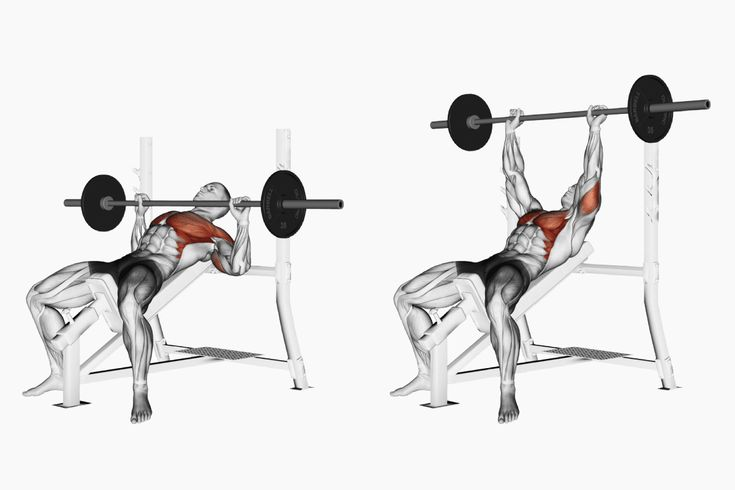

Deite-se em um banco reto com os pés firmes no chão.
Segure um halter em cada mão, com as palmas voltadas para frente.
Mantenha os halteres alinhados ao peito e os cotovelos levemente abaixo da linha do banco.
Execução do movimento
Empurre os halteres para cima, estendendo os braços até que fiquem quase totalmente retos.
Evite travar os cotovelos no topo do movimento.
Faça uma leve pausa no topo antes de descer.
Descida controlada
Baixe os halteres lentamente até que os cotovelos fiquem na altura do peito.
Mantenha o controle e evite deixar os pesos caírem rapidamente.
Respiração adequada
Inspire ao baixar os halteres.
Expire ao empurrá-los para cima.
Dicas Para Melhor Execução
✅ Mantenha os ombros estáveis e não deixe os cotovelos descerem demais.
✅ Escolha halteres com um peso adequado para que consiga controlar bem o movimento.
✅ Evite arquear exageradamente a lombar—mantenha o core ativado para proteção.
✅ Faça 3 a 4 séries de 8 a 12 repetições, conforme seu objetivo (hipertrofia ou resistência).
Esse exercício é excelente porque permite mais amplitude de movimento do que o supino com barra, ativando ainda mais as fibras musculares do peito. 🚀💪🏼
Supino Inclinado com barra

Sugestão de Vídeo:
Passo a Passo da Execução:
Posição inicial
Ajuste o banco para um ângulo de aproximadamente 30 a 45 graus.
Deite-se e posicione os pés firmemente no chão.
Pegue a barra com um afastamento um pouco maior que a largura dos ombros.
Mantenha os pulsos retos e os ombros estabilizados.
Descida controlada
Abaixe a barra de forma controlada até a parte superior do peito.
Os cotovelos devem formar um ângulo de aproximadamente 75-90 graus.
Evite que a barra toque seu peito bruscamente.
Subida com força e controle
Empurre a barra para cima até estender quase totalmente os braços, sem travar os cotovelos.
Mantenha a barra em linha reta e estável durante a execução.
Expire ao empurrar a barra para cima.
Dicas Para Melhor Execução
✅ Não arqueie demais a lombar—mantenha o core ativado para suporte.
✅ Evite que os cotovelos fiquem muito abertos para proteger os ombros.
✅ Carga moderada é essencial para manter o controle e evitar lesões.
✅ 3 a 4 séries de 8 a 12 repetições são indicadas para ganho de força e hipertrofia.
O supino inclinado ajuda a dar mais volume e definição à parte superior do peito, essencial para um peitoral bem desenvolvido. 🚀💪🏼